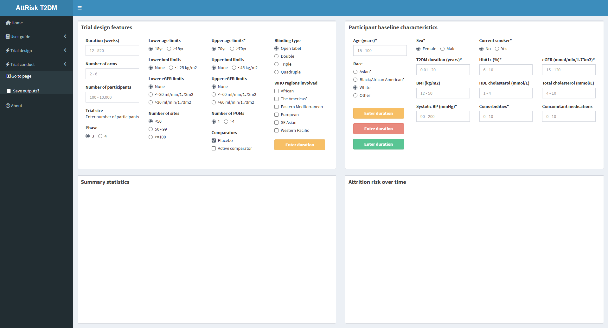
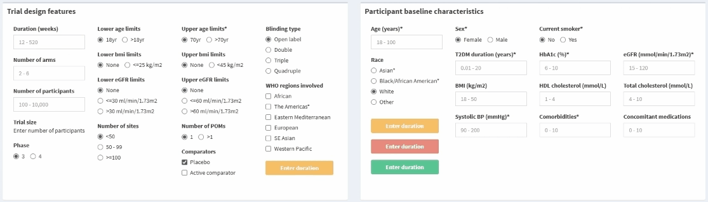

Using the trial conduct interface
Upon clicking Trial conduct in the sidebar, you will be greeted with the empty interface.

Two buttons controlling the interface are found at the bottom of Box A:
- Reset inputs - Resets inputs for design features and characteristic
- Reset everything - Resets the conduct interface (i.e. clear inputs and outputs)
- Predict risk - Initiates interface to generate outputs
By default, all buttons are disabled until duration and age have been entered. Each button will display the remaining required input (e.g. if duration is entered, each button displays Enter age).
Once duration and age are entered, the buttons will activate.

After pressing Predict risk, outputs will be generated in boxes C and D after a couple of seconds.